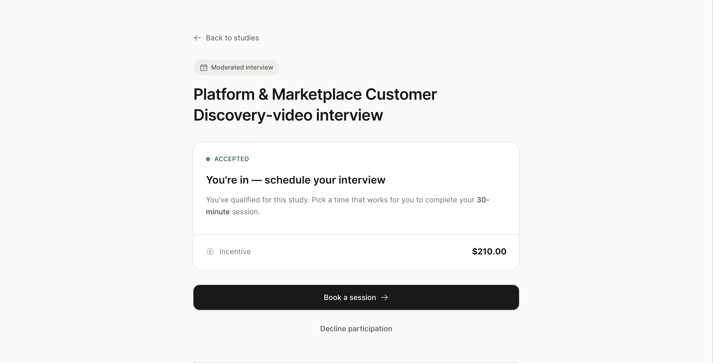
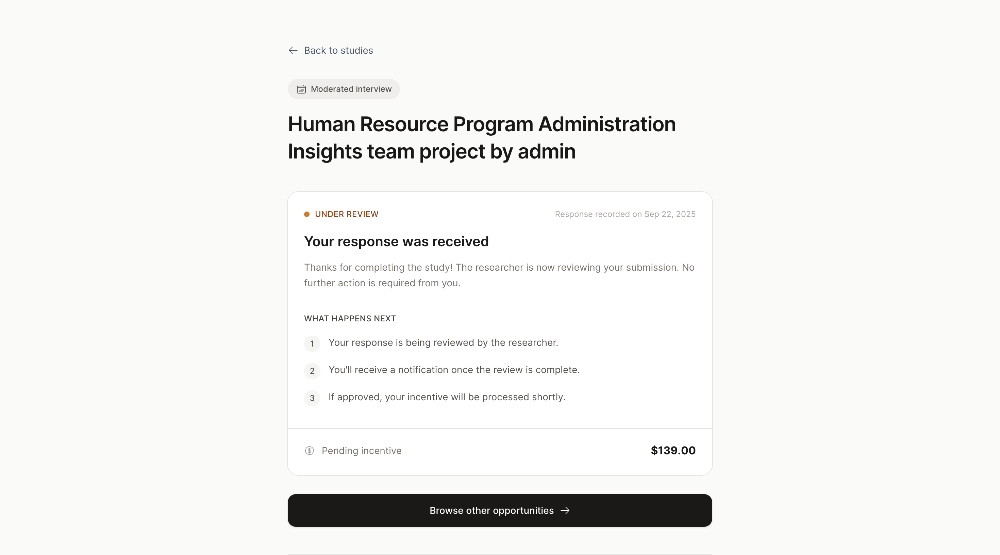
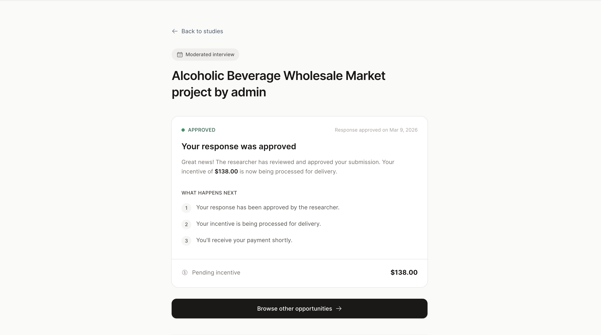
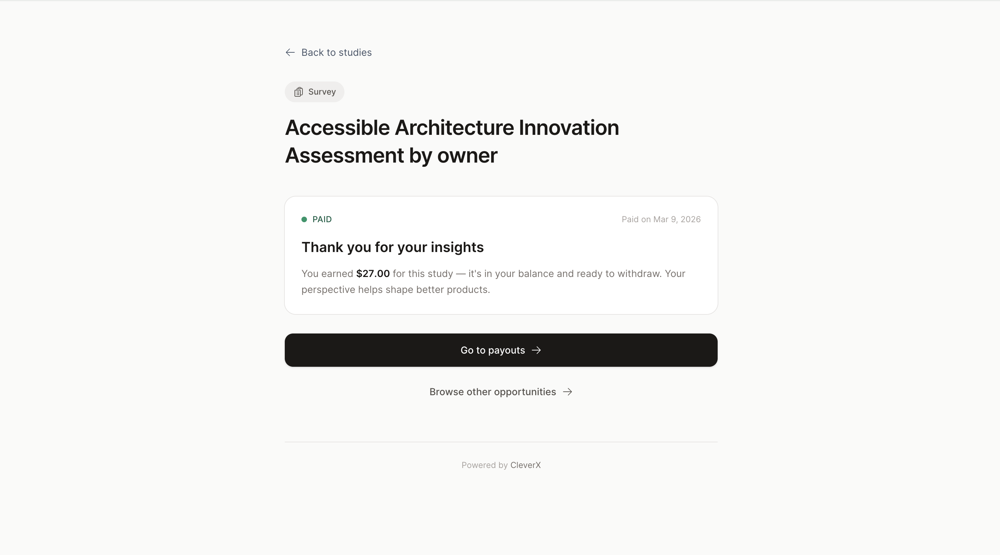
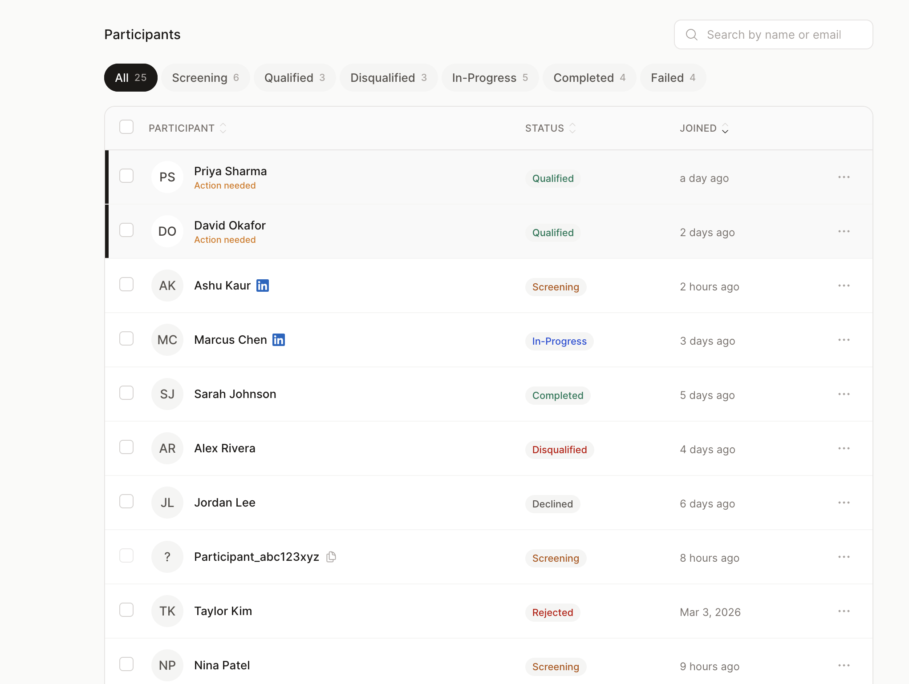
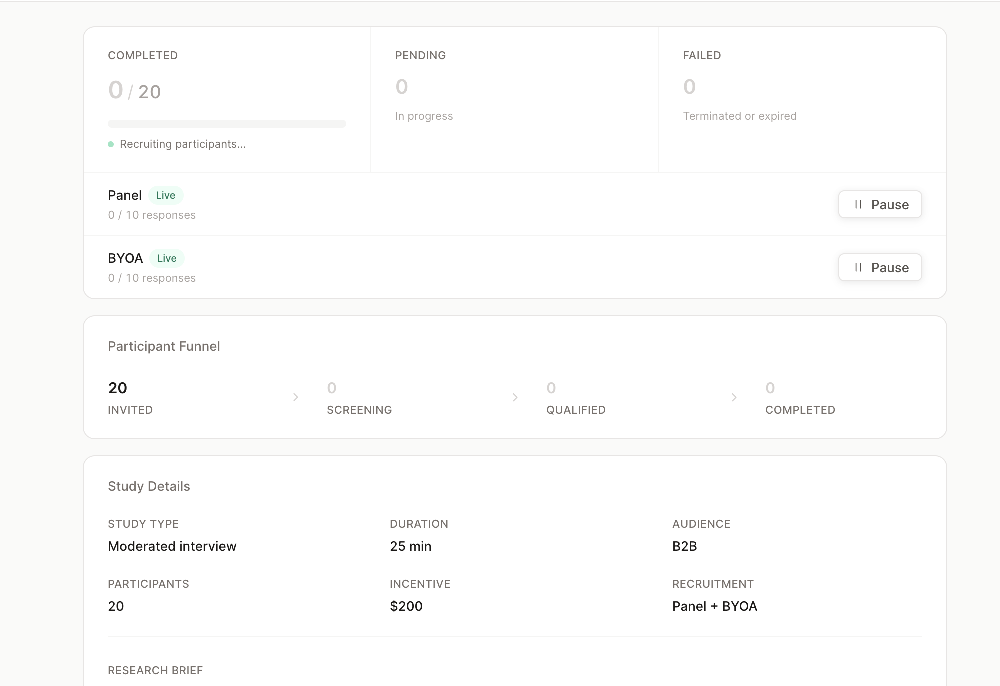
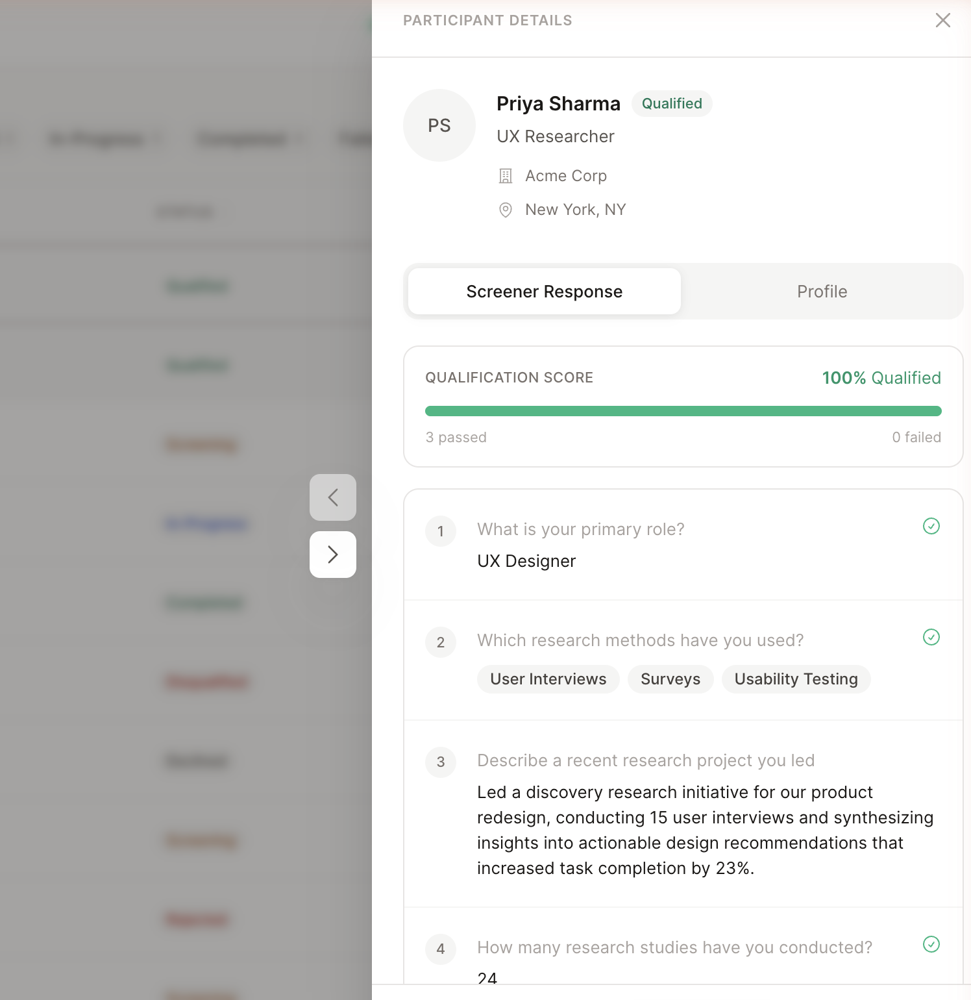
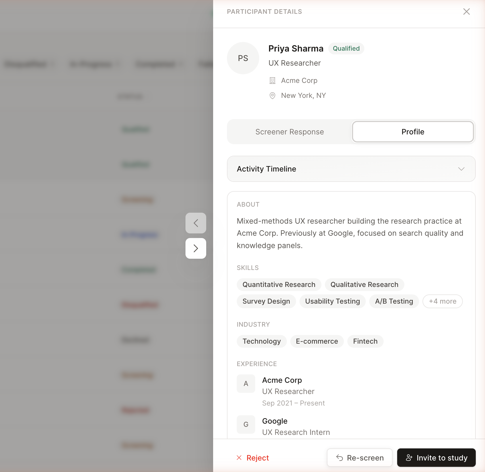

AI + Design · Claude Code · 2025–2026
From UX Audit to Production — Redesigning CleverX's Core Flows
CleverX is an AI-powered user research platform that helps companies design, recruit, conduct, and analyze research studies across B2B and B2C audiences. I've been a UI/UX Designer here for over 5 years.
The industry shifted, and so did we. AI became a core part of how we build — not just as a product feature, but as the main tool in our workflow. We started shipping faster than ever, redesigning and building directly with AI and pushing code through Git.
But speed came with tradeoffs. As we shipped quickly, design inconsistencies crept in — scattered buttons, old components mixed with new ones, broken visual hierarchy, and UX dead ends where users were left without clear next steps. Clients started flagging broken flows. The product was moving fast, but the experience wasn't keeping up.
That's when we started auditing the product systematically — flow by flow — and fix what was broken. This case study covers two pieces of that work: a redesign of the participant-side experience and fixes across the researcher study dashboard.
Methodology
The Audit
I audit CleverX flow by flow — walking through each experience as a user, noting every friction point, dead end, and inconsistency. A full flow audit typically takes a day.
So far I've audited the AI study creation tool, study details pages, participant dashboard, My Studies cards, Browse Studies cards, team management, and settings. This is ongoing work — every audit surfaces new issues to fix.
For each audit, I use a combination of approaches:
- Heuristic evaluation — Checking screens against usability principles: visibility of system status, consistency, error prevention, hierarchy. This is where most labelling, navigation, and layout issues surface
- Usability walkthrough — Going through every step of a flow as a real user would, noting dead ends, missing information, and moments of confusion
- Accessibility check — Reviewing contrast, readability, keyboard navigation, and screen reader considerations
- Competitive analysis — Benchmarking against other platforms to see how they handle similar screens and information patterns
Part 1
Participant Side Redesign
The Problems
After auditing the participant flows, the issues were clear — and some of them were things clients had already raised:
- Dead ends after completing screeners. Participants would finish a screener and land on a page with no information about what happens next. No next steps, no timeline, no indication of whether they'd been accepted or when to expect payment. It was a dead end that likely drove support questions
- Project cards with no useful context. Participants had no quick way to know a project's state, urgency, or expiry without clicking into each one. Key details were buried while less relevant content took up visual space
- No visual hierarchy across study states. Detail pages for every state — action required, paid, awaiting incentive, expired — had center-aligned content, no clear scanning pattern, and missing navigation
- Inconsistent components. A mix of old and new design system components made the experience feel like different products stitched together
What I Shipped
- Fixed the dead ends. Every study state now shows relevant information — what's happening, what to expect next, and when. Participants should never complete a screener and wonder what happens after
- Redesigned project cards. Studied how competitor platforms handle similar cards, then restructured ours — surfacing details participants actually need and adding status badges for quick scanning
- Rebuilt all study detail pages. Fixed the center-aligned layout, established proper visual hierarchy, added navigation, and filled in missing context for every state
- Consistency pass. Swapped all old components for current design system components across every participant-facing page
- Responsive from the start. Every redesigned page was built responsive from day one, not retrofitted after




Part 2
Researcher Study Dashboard
The Problems
The researcher side had issues that directly slowed down their core workflow — verifying participants and managing studies:
- Participant verification was painful. The drawer was missing critical information — skills, work experience, industries, and qualification details were either absent or unstructured. Researchers had to leave CleverX entirely, click through to a participant's LinkedIn profile, review them there, then come back to approve. This back-and-forth added unnecessary friction to every single approval
- Overview page was noisy. Repeated information and duplicate buttons created confusion instead of clarity
- Study controls were unclear. Pause buttons didn't explain what they controlled — researchers couldn't tell whether they were pausing the BYOA audience, the CleverX panel, or both. Button text was truncated and hidden, making it worse
- Stats without navigation. Key numbers showed counts but with no way to click through and see the actual participants behind them
- Broken responsive layouts and legacy components scattered throughout
What I Shipped
- Redesigned the participant drawer. Added skills, work experience, and industries directly into the drawer so researchers can evaluate a participant without leaving CleverX. Added qualification checks next to each screener question for at-a-glance assessment. What used to require leaving the platform and checking LinkedIn now happens in a single panel
- Cleaned up overview and settings. Removed repeated information, made key stats clickable for deeper navigation, and added separate clearly-labelled pause buttons for BYOA audience and CleverX panel
- Redesigned screener pages. Removed visual noise and aligned styling with the current design language
- Fixed responsive tables. Made data tables scannable on smaller screens without horizontal scrolling or hidden columns
- Component swap. Replaced all legacy components with the current design system library across every page




Process
How I Work Now
This project marked a real shift in how I work. My workflow used to be: design in Figma, hand off to developers, file bugs, wait for fixes. Now it looks like this:
When I spot a bug or a UX issue, I fix it myself instead of filing a ticket and waiting days for it to get picked up. Claude Code handles the translation from design intent to working frontend code — I describe what needs to change, review the output, and iterate until it matches.
This workflow has fundamentally changed our speed. Design and UX fixes that used to sit in a dev queue for days now get resolved the same day I find them.
Impact
What Changed
- Eliminated dead ends across participant flows — every study state now provides clear next steps, payment timelines, and status context
- Removed the need for researchers to leave CleverX to verify participants — profile review now happens entirely within the platform
- Made the researcher dashboard scannable by surfacing key information, removing noise, and adding navigable stats
- Unified the visual language by replacing legacy components across every page touched
- Reduced the turnaround on design and UX fixes from days (waiting in dev queue) to same-day — by shipping fixes directly through Claude Code
- Ongoing audits continue to surface and resolve issues across the platform flow by flow